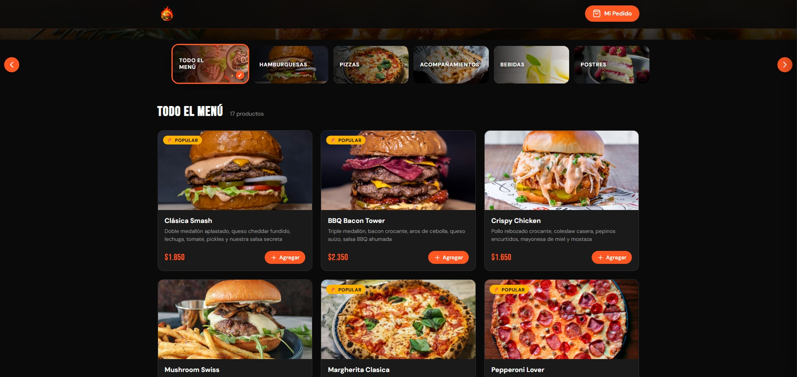
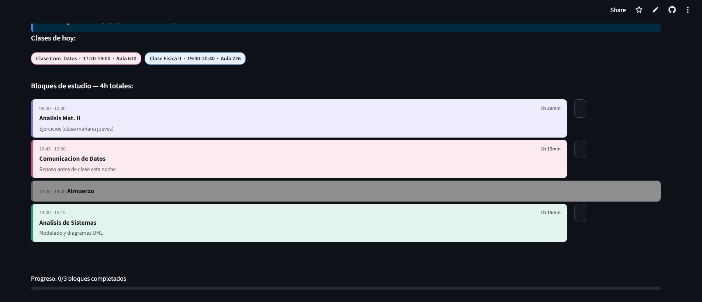

Desarrollador Web y Estudiante de Ingeniería
Hola, soy
Lucas.
Estudiante y desarrollador apasionado por construir cosas reales con código. Últimamente enfocado en el frontend y de a poco aprendiendo todo lo demás.

Desarrollador Web y Estudiante de Ingeniería
Estudiante y desarrollador apasionado por construir cosas reales con código. Últimamente enfocado en el frontend y de a poco aprendiendo todo lo demás.
Soy un desarrollador web en crecimiento y estudiante de Ingeniería en Sistemas, con ganas de aprender y mejorar cada día. Me especializo en el frontend pero entiendo lo que pasa del otro lado también.
Estoy construyendo proyectos personales para ganar experiencia real mientras termino mis estudios. Creo que la mejor manera de aprender es haciendo cosas reales.
Busco mi primera oportunidad laboral donde pueda aportar mis conocimientos, comunicación y ganas de crecer dentro de un equipo.

Desarrollé una solución integral para automatizar la toma de turnos. A través de una interfaz amigable en Python, el sistema sincroniza automáticamente las citas con el calendario del profesional y notifica al instante al cliente vía correo electrónico. Una herramienta escalable y adaptable a cualquier modelo de negocio basado en servicios.


Desarrollo de una tienda virtual interactiva centrada en la experiencia de usuario (UX) y la gestión dinámica de productos. La plataforma permite navegar por un catálogo, gestionar un carrito de compras en tiempo real y avanzar hacia el proceso de finalización de compra, todo con una interfaz fluida y responsiva.

Este proyecto consistió en el diseño y desarrollo de una plataforma web personalizada para una agencia de representación deportiva. El objetivo principal fue crear una vitrina digital que proyecte confianza, profesionalismo y dinamismo, elementos clave en el mercado del fútbol profesional.


El portfolio que estás viendo también es un proyecto. Diseñado y construido desde cero en HTML, CSS y JS puro.
Frontend
Backend & Lenguajes
Herramientas & DevOps
Solución integral desarrollada en Streamlit para la automatización de agendas. Permite a negocios locales gestionar sus turnos de forma digital, eliminando la carga administrativa manual y mejorando la experiencia del cliente con una interfaz intuitiva y adaptable.
Python Streamlit APIsDesarrollo de sitios web para pequeños emprendimientos del entorno cercano. Diseño, maquetado y despliegue de páginas estáticas y dinámicas.
HTML/CSS JavaScript ReactDesarrollo y mantenimiento de la plataforma web de Q10 Sports (Agencia de Representación), enfocada en la exposición digital de futbolistas profesionales mediante HTML y CSS.
GitHub HTML/CSS